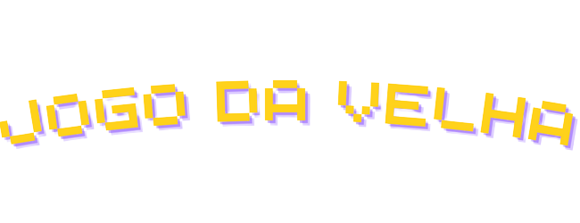

<div class="text-center">
 <br>
</div>

<p-dialog [(visible)]="!this.status.on" [closable]="false" [style]="{width: 'max-content', height: 'max-content'}">
  <div class="flex-auto flex justify-content-between">
    <button pButton pTooltip="Undo" icon="pi pi-backward" [disabled]="this.lastPlay.length < 1" (click)="this.undo()"></button>
    <button pButton pTooltip="Refresh" icon="pi pi-refresh" (click)="this.refresh()"></button>
  </div>
    <table style="margin: auto">
      <tbody class="bg-yellow-500" click="movement = !movement">
        <tr>
          <td id="0" class="w-5rem h-5rem p-2 border-round-left text-center" (click)="insertIn(0)"></td>
          <td id="1" class="w-5rem h-5rem p-2 border-round-top text-center" (click)="insertIn(1)"></td>
          <td id="2" class="w-5rem h-5rem p-2 border-round-right text-center" (click)="insertIn(2)"></td>
        </tr>
        <tr>
          <td id="3" class="w-5rem h-5rem p-2 border-round-left text-center" (click)="insertIn(3)"></td>
          <td id="4" class="w-5rem h-5rem p-2 text-center" (click)="insertIn(4)"></td>
          <td id="5" class="w-5rem h-5rem p-2 border-round-right text-center" (click)="insertIn(5)"></td>
       </tr>
       <tr>
          <td id="6" class="w-5rem h-5rem p-2 border-round-left text-center" (click)="insertIn(6)"></td>
          <td id="7" class="w-5rem h-5rem p-2 border-round-bottom text-center" (click)="insertIn(7)"></td>
          <td id="8" class="w-5rem h-5rem p-2 border-round-right text-center" (click)="insertIn(8)"></td>
        </tr>
      </tbody>
    </table>
    <button pButton pTooltip="Info" icon="pi pi-info" (click)="info = !info"></button>
</p-dialog>

<p-dialog header="Sobre" position="bottom" [(visible)]="info" [breakpoints]="{'960px': '75vw', '640px': '100vw'}" [style]="{width: '70vw'}">
  <div>
    <h3>Este trabalho foi desenvolvido pelo aluno Felipe Pires de BSI para a matéria de programação WEB</h3>
  </div>
</p-dialog>

<p-dialog [modal]="true" class="text-center" [(visible)]="this.status.on" [closable]="false">
  <ng-template pTemplate="header">
    <span class="flex-auto flex align-items-center justify-content-center text-2xl" *ngIf="this.status.win"><i class="{{this.status.winner ? 'fa-solid fa-xmark fa-2x' : 'fa-regular fa-circle fa-2x'}} mr-2"></i> Venceu !!</span><br>
    <span class="flex-auto flex align-items-center justify-content-center text-2xl" *ngIf="this.status.tie">Empate!</span><br>
  </ng-template>
    <button pButton icon="pi pi-reload" label="Jogar de novo" (click)="this.reload()"></button>
</p-dialog>
